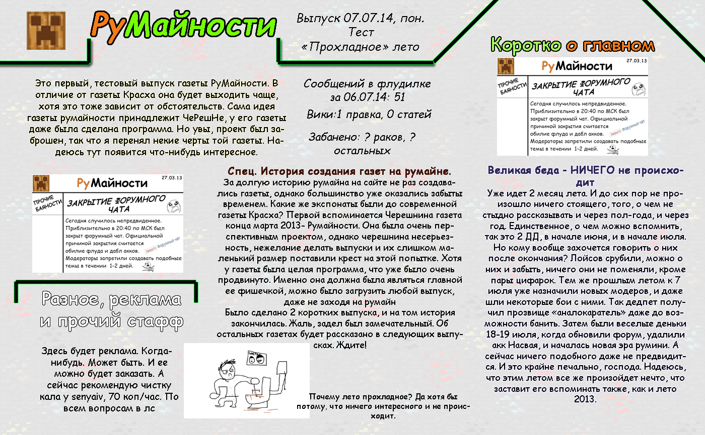
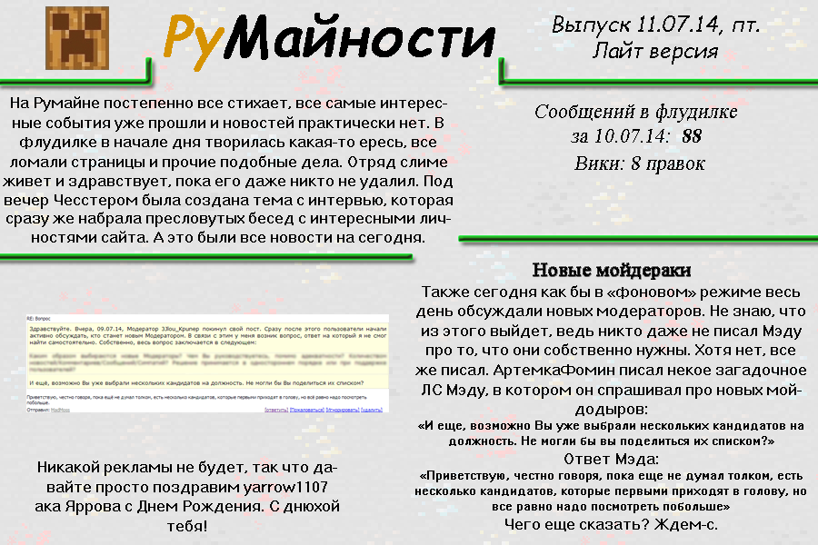
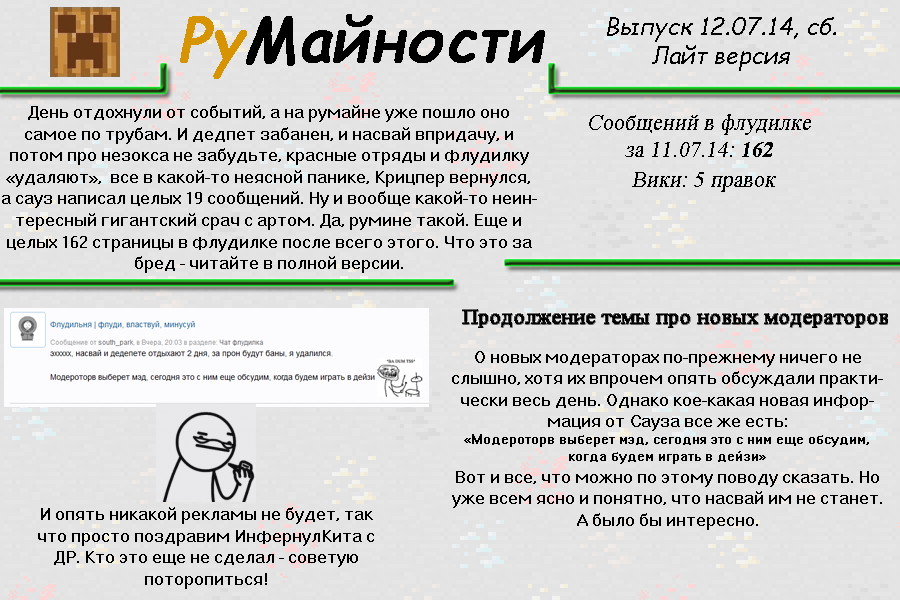
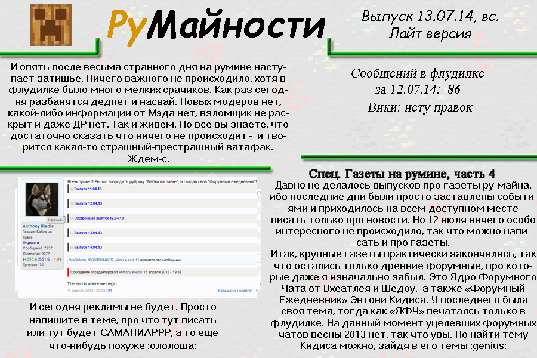

Румайности
[Январь 2013] --> Июль 2014 --> Нынешняя дата
Что это?
Румайности – это классная серия газет про события на не менее классном сайте ru-minecraft.ru. Если хочется узнать сводку новостей с Румине, то данная газета
это просто то, что доктор прописал!
Рецепт к употреблению следующий: берутся выпуски за нужную дату и читаются от корки до корки. В процессе обретается
просветление, и, скорее всего, сила земли.
История
Идея румайностей зародились на сайте весной 2013 года, а её автором являлся пользователь ЧеРеШня. Впрочем 98% реализации принадлежит некоему Аллеху ака Allexx'у, который эти строки как бы и написал. Вот с тех пор он-то и делает эти самые выпуски газеты в их актуальном виде.
Без Румине и его пользователей писать газету было бы тяжко. Эти шельмецы своей акт*вностью создают события, классные картинки и прочий контент, который потом и собирается в выпуски газеты! Так что им вручается большая такая благодарность. Равно как и всем читателям, вот.
Виды Румайностей
Классические Румайности
Оригинальные выпуски, которые изначально публиковались в виде картинок разного размера с текстом. Сейчас переведены в веб-формат для удобства чтения.
Выпускались с 2014 по 2018 весьма нерегулярно.
Веб-Румайности
Представляют собой полноценно оформленную веб-страницу с прописанными событиями, картинками, цитатами и прочими прелестями интернета.
Издавались с 2019 года. В текущий момент формат уже устарел.
Симуляторные Румайности
Новейшие выпуски газет. Формируются в симуляторе и доступны только в нём. Описывают самые разные времена - от 2011 до 2023. По сути те же веб-Румайности, но с дополнительной фичей в виде симулятора Румине.
Выпускаются с 2024 года, нумерация вновь идёт с 1-го выпуска.
Ретро-Румайности
Специальная серия газеты. У этих выпусков есть особенность, что они написаны спустя много лет после описываемых в ней событий, т.е. в оригинальное время этих газет не было.
Выпуски
| Превью | № | Формат | Описываемый период | Ссылка |
|---|---|---|---|---|
| Симуляторные Румайности | ||||
| 1 | веб-версия |
2011 |
Открыть в симуляторе | |
| 2 | веб-версия |
2011-2012 |
Открыть в симуляторе | |
| 3 | веб-версия |
2012 |
Открыть в симуляторе | |
| 4 | веб-версия |
2012 |
Открыть в симуляторе | |
| 5 | веб-версия |
Конец 2012 |
Открыть в симуляторе | |
| 6 | веб-версия |
Январь 2013 |
Открыть в симуляторе | |
| 7 | веб-версия |
Февраль 2013 |
Открыть в симуляторе | |
| 8 | веб-версия |
Март 2013 |
Открыть в симуляторе | |
| 19 | веб-версия |
2019 |
Открыть в симуляторе | |
| 20 | веб-версия |
2020 |
Открыть в симуляторе | |
| 21 | веб-версия |
2021 |
Открыть в симуляторе | |
| 22 | веб-версия |
Начало 2022 |
Открыть в симуляторе | |
| 23 | веб-версия |
Весна 2022 |
Открыть в симуляторе | |
| 24 | веб-версия |
Конец 2022 |
Открыть в симуляторе | |
| 25 | веб-версия |
2023 |
Открыть в симуляторе | |
| Классические Румайности 2014 | ||||
|  | 1 | Картинка |
7 июля 2014 |
Открыть |
 |
2 | Картинка |
8 июля 2014 |
Открыть |
 |
3 | Картинка |
9 июля 2014 |
Открыть |
 |
4 | Картинка |
10 июля 2014 |
Открыть |
|  | 5 | Картинка |
11 июля 2014 |
Открыть |
|  | 6 | Картинка |
12 июля 2014 |
Открыть |
|  | 7 | Картинка |
13 июля 2014 |
Открыть |
 |
8 | Картинка |
14 июля 2014 |
Открыть |
| Классические Румайности 2015 | ||||
 |
9 | Картинка |
25 марта 2015 |
Открыть |
 |
10 | Картинка |
26 марта 2015 |
Открыть |
 |
11 | Картинка |
27 марта 2015 |
Открыть |
 |
12 | Картинка |
28 марта 2015 |
Открыть |
 |
13 | Картинка |
29 марта 2015 |
Открыть |
 |
14 | Картинка |
30 марта 2015 |
Открыть |
 |
15 | Картинка |
31 марта 2015 |
Открыть |
 |
16 | Картинка |
1 апреля 2015 |
Открыть |
 |
17 | Картинка |
2 апреля 2015 |
Открыть |
| Классические Румайности 2016-2018 | ||||
| 18 | Картинка |
12 апреля 2016 |
Открыть | |
| 19 | Картинка |
10 июня 2016 |
Открыть | |
| 20 | Картинка |
6 июля 2016 |
Открыть | |
| 21 | Картинка |
7 июля 2016 |
Открыть | |
 |
22 | Картинка |
8 июля 2016 |
Открыть |
| 23 | Картинка |
май 2017 |
Открыть | |
 |
24 | Картинка |
18 октября 2018 |
Открыть |
| Веб-Румайности 2019+ | ||||
 |
0-1 | веб-версия |
Декабрь 2012 года |
Открыть |
|
0-2 | веб-версия |
Январь 2013 года |
Открыть |
| 25 | веб-версия |
2019 год |
Открыть | |
| 26 | веб-версия |
2020 год |
Открыть | |
| 27 | веб-версия |
2021 год |
Открыть | |